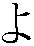

二十一日の御手紙は落掌しました。惠曇村から出したのもとくにつきましたが直東京へ出

するだろーと思って返事をよこさなかった。『故事新編』の中に『鑄劍』は確に割合に穞面目に書いた方ですが、併し根拠は忘れて仕舞ひました、幼い時に赗んだ本から取ったのだから。恐らく『吴越春秋』か『越絶書』の中にあるだろーと思ひます。日本の『支那童話集』之類の中にもある、僕も見た事があったとおぼえて居ます。日本には何だか此頃、非常に「全集」と云ふ言葉をすく様だ。
『鑄劍』の中にはそう難解な処はないと思ふ。併し注意しておきたいのは、即ち其中にある歌はみなはっきりした意味を出して居ない事です。変挺な人間と首が歌ふものですから我々の様な普通な人間には解り兼るはづです。三番目の歌は宓に立派な、4なものですが、併し「堂哉皇哉兮噯々唷」の中の「」は淫猥な小曲に使ふこえです。
私もよろこんで五月上旬か中旬頃を待って居ます。上海も五六年前の上海とは大にったが併し「心氘軎换」の蘺として使ふ事はただ出瘄るかも知れない。僕はとくに昔のアパートに居ない、それは内山老板にきけば今度のアドレスを知らせます。
今月の始めに疲瘆と寒さに牷しての不注意の結果、急病にか り暫らく横って仕舞ひましたが此頃は殆んど恢復しました。不相変、翻訳などをやって居ます。
り暫らく横って仕舞ひましたが此頃は殆んど恢復しました。不相変、翻訳などをやって居ます。
鄭振鐸君の活動方面は余りに多いから『十竹齋箋譜』の催促をなまけて居ました、が、此頃やっと第二册目の彫刻がすみ、これから印刷にかります。瘄年でなければ全部（四册）出瘄ないに違ひない。
迅 捭 三月二十八日
增田兄几下
[译文]
二十一日惠函收到。由惠昙村发出的信，也早收到。我以为你即去东京，故未回信。《故事新编》中的《铸剑》，确是写得较为认真。但是出处忘记了，因为是取材于幼时读过的书，我想也许是在《吴越春秋》或《越绝书》[244]里面。日本的《中国童话集》[245]之类中也有，我记得也是看见过的。
日本怎么搞的，最近好像很喜爱“全集”这个词儿。
在《铸剑》里，我以为没有什么难懂的地方。但要注意的，是那里面的歌，意思都不明显，因为是奇怪的人和头颅唱出来的歌，我们这种普通人是难以理解的。第三首歌，确是伟丽雄壮，但“堂哉皇哉兮嗳嗳唷”中的“嗳嗳唷”，是用在猥亵小调的声音。
我也欣慰地期待着五月上旬或中旬的到来。上海也和五六年前的上海大不相同，不过聊当“转换心情”之药，也未尝不可。我早已不住以前的公寓，问内山老板便知现在的住址。
本月初，因未注意疲劳和寒冷，致患急症，卧床多日，顷已大致痊愈，仍旧译作。
郑振铎君因活动过多，对《十竹斋笺谱》督促不力，但现在第二册总算刻好，即将付印，全部（四册）不到明年是出不成的。
迅 拜 三月二十八日
增田兄几下
注 释
[244] 《吴越春秋》 东汉赵晔撰，记述吴自太伯至夫差、越自无余至勾践的史事，收入不少民间传说。原书十一卷，今存十卷。《越绝书》，东汉袁康撰。记述吴越两国史地及重要历史人物的事迹，多采传闻异说。原书二十五卷，今存十五卷。在《吴越春秋·阖闾内传》和《越绝书·越绝外传记宝剑》中均有《铸剑》故事的记载。
[245] 《中国童话集》 日本池田大伍编译，1924年东京富山房出版。